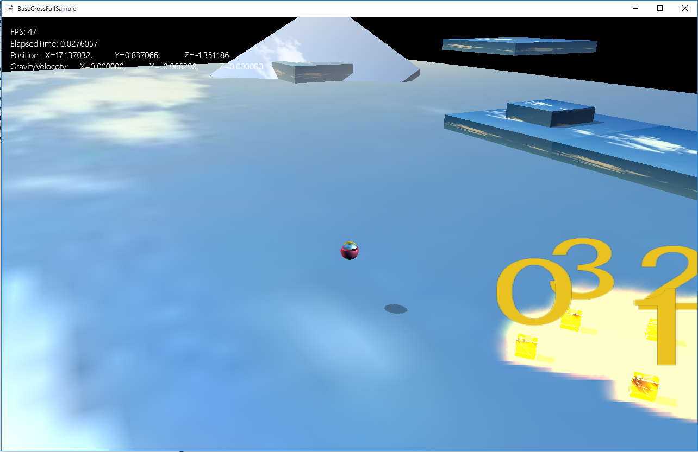

図1304a
//初期化
void MultiFire::OnCreate() {
//加算描画処理をする
SetAddType(true);
}
void MultiFire::InsertFire(const Vec3& Pos) {
auto ptrParticle = InsertParticle(4);
ptrParticle->SetEmitterPos(Pos);
ptrParticle->SetTextureResource(L"FIRE_TX");
ptrParticle->SetMaxTime(0.5f);
for (auto& rParticleSprite : ptrParticle->GetParticleSpriteVec()) {
rParticleSprite.m_LocalPos.x = Util::RandZeroToOne() * 0.1f - 0.05f;
rParticleSprite.m_LocalPos.y = Util::RandZeroToOne() * 0.1f;
rParticleSprite.m_LocalPos.z = Util::RandZeroToOne() * 0.1f - 0.05f;
//各パーティクルの移動速度を指定
rParticleSprite.m_Velocity = Vec3(
rParticleSprite.m_LocalPos.x * 5.0f,
rParticleSprite.m_LocalPos.y * 5.0f,
rParticleSprite.m_LocalPos.z * 5.0f
);
//色の指定
rParticleSprite.m_Color = Col4(1.0f, 1.0f, 1.0f, 1.0f);
}
}
auto ptrParticle = InsertParticle(4);
ptrParticle->SetEmitterPos(Pos);
ptrParticle->SetTextureResource(L"FIRE_TX");
ptrParticle->SetMaxTime(0.5f);
for (auto& rParticleSprite : ptrParticle->GetParticleSpriteVec()) {
rParticleSprite.m_LocalPos.x = Util::RandZeroToOne() * 0.1f - 0.05f;
rParticleSprite.m_LocalPos.y = Util::RandZeroToOne() * 0.1f;
rParticleSprite.m_LocalPos.z = Util::RandZeroToOne() * 0.1f - 0.05f;
//各パーティクルの移動速度を指定
rParticleSprite.m_Velocity = Vec3(
rParticleSprite.m_LocalPos.x * 5.0f,
rParticleSprite.m_LocalPos.y * 5.0f,
rParticleSprite.m_LocalPos.z * 5.0f
);
//色の指定
rParticleSprite.m_Color = Col4(1.0f, 1.0f, 1.0f, 1.0f);
}
//炎の作成
void GameStage::CreateFire() {
auto MultiFirePtr = AddGameObject<MultiFire>();
//共有オブジェクトに炎を登録
SetSharedGameObject(L"MultiFire", MultiFirePtr);
}
void SeekObject::OnCollisionEnter(shared_ptr<GameObject>& Other) {
//ファイアの放出
auto ptriFire = GetStage()->GetSharedGameObject<MultiFire>(L"MultiFire", false);
if (ptriFire) {
ptriFire->InsertFire(GetComponent<Transform>()->GetPosition());
}
}
void MultiSpark::OnUpdate() {
for (auto ptrParticle : GetParticleVec()) {
for (auto& rParticleSprite : ptrParticle->GetParticleSpriteVec()) {
if (rParticleSprite.m_Active) {
rParticleSprite.m_Color.z += 0.05f;
if (rParticleSprite.m_Color.z >= 1.0f) {
rParticleSprite.m_Color.z = 1.0f;
}
}
}
}
//親クラスのOnUpdate()を呼ぶ
MultiParticle::OnUpdate();
}
//親クラスのOnUpdate()を呼ぶ
MultiParticle::OnUpdate();
void Scene::CreateResourses() {
wstring dataDir;
//サンプルのためアセットディレクトリを取得
App::GetApp()->GetAssetsDirectory(dataDir);
//中略
//以下オーディオ
//サウンド
wstring CursorWav = dataDir + L"cursor.wav";
App::GetApp()->RegisterWav(L"cursor", CursorWav);
//ミュージック
wstring strMusic = dataDir + L"nanika .wav";
App::GetApp()->RegisterWav(L"Nanika", strMusic);
}
void Scene::OnCreate(){
try {
//リソース作成
CreateResourses();
//BGMの再生
auto ptrXA = App::GetApp()->GetXAudio2Manager();
m_BGM = ptrXA->Start(L"Nanika", XAUDIO2_LOOP_INFINITE, 0.1f);
//中略
}
catch (...) {
throw;
}
}
void Scene::OnDestroy() {
//親クラスのOnDestroyを呼ぶ
SceneBase::OnDestroy();
auto ptrXA = App::GetApp()->GetXAudio2Manager();
ptrXA->Stop(m_BGM);
}
//Aボタン
void Player::OnPushA() {
auto grav = GetComponent<Gravity>();
grav->StartJump(Vec3(0,4.0f,0));
//スパークの放出
auto PtrSpark = GetStage()->GetSharedGameObject<MultiSpark>(L"MultiSpark", false);
if (PtrSpark) {
PtrSpark->InsertSpark(GetComponent<Transform>()->GetPosition());
}
//サウンドの再生
auto ptrXA = App::GetApp()->GetXAudio2Manager();
ptrXA->Start(L"cursor", 0, 0.5f);
}